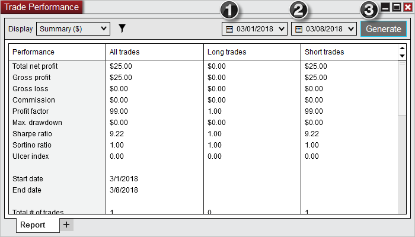
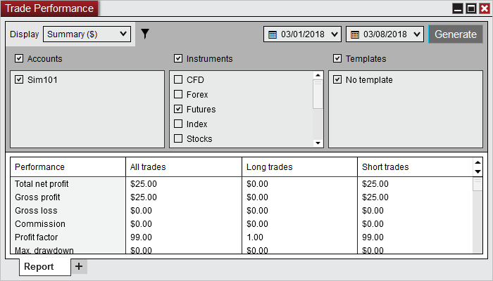

|
<< Click to Display Table of Contents >> Using Trade Performance |


|
Using Trade Performance
|
<< Click to Display Table of Contents >> Using Trade Performance |
|
You can access the Trade Performance window from within the NinjaTrader Control Center window by left mouse clicking on the menu New, and then selecting the menu item Trade Performance.
Understanding the performance report
Performance ReportTo generate a performance report:
1.Select the From date 2.Select the To date 3.Press the Generate button
Performance data is generated and displayed in the various Performance Displays.

The Generate button only needs to be pressed when adjusting the From and To dates or if since generating the report new trades have been placed within the From and To dates.
Display OptionsUse the Display selector to select both what to display and how to display it.
Available Display Views •Summary •Analysis •Executions •Trades •Orders •Journal
Available Display Units •Currency •Percent •Points •Pips •Ticks
|
Filter OptionsPressing the Filter icon will expand the Performance tab to include parameters that you can use to filter your performance reports. This filtering is done on an executions basis and not a trades basis.

|